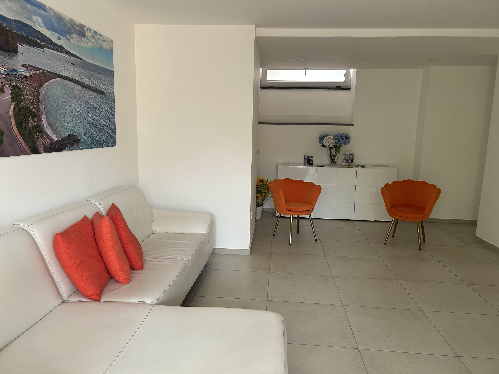

Reception
The reception is open from 12 to 8 PM and we assist with restaurant reservations, tour and transfer bookings, or just providing local tips.

Entrance and Lounge Area
Right by the entrance we have a welcoming lounge with a few sofas and chairs, ideal for relaxing while waiting for a transfer, or just resting. There is also a toilet available in this area and we can store your luggage if needed.
Veranda
In our veranda you can find a surface to eat or prepare simple meals, a sink, some plates, cutlery, cups, and so on. There’s also an iron and ironing board available, and a nice view of the pool and garden.

Garden
Our peaceful garden features a gazebo with a table and chairs and a few sunbeds where you can lay in the shade or the sun.

Pool and Solarium
Our small pool is open from 9 AM to 7 PM, and it’s perfect for relaxing and cooling off in the warmer months. Around it you’ll find the solarium with more sunbeds, umbrellas, and an outdoor shower.

Parking
Parking is available only on request and must be arranged with us after the reservation.